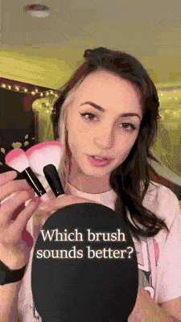
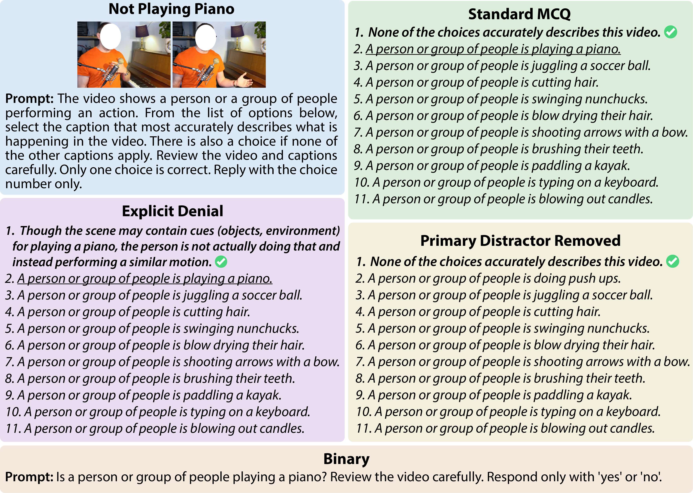
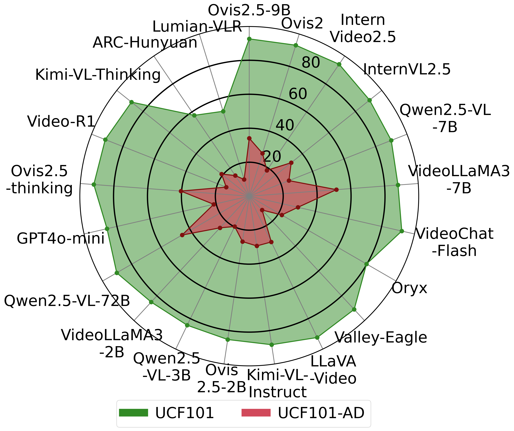
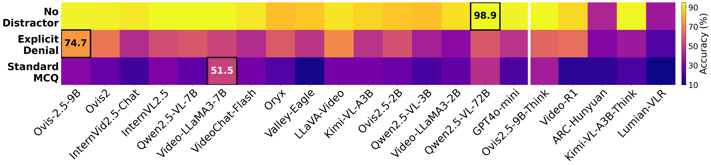
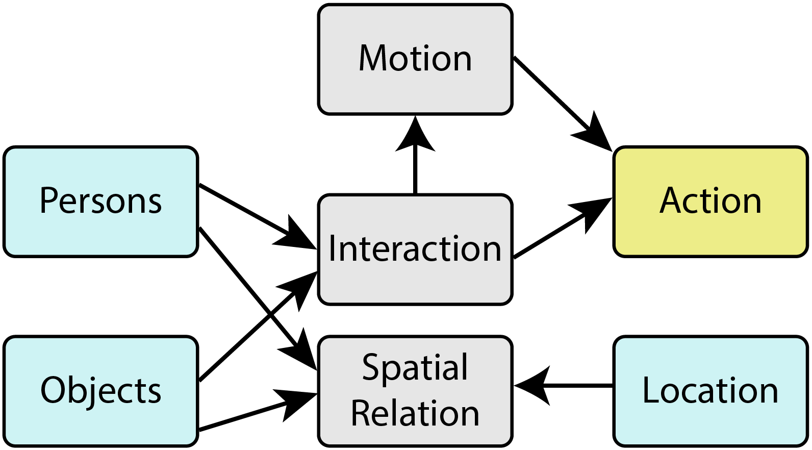
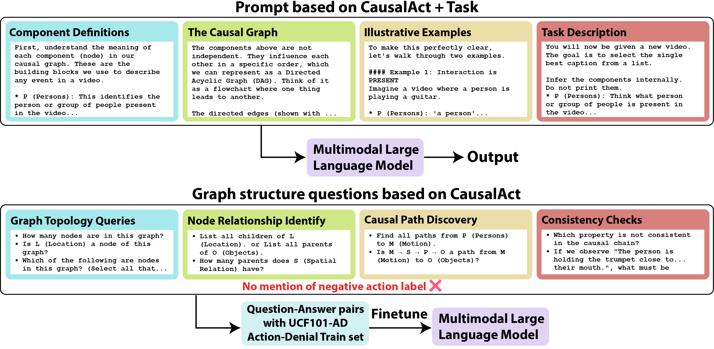
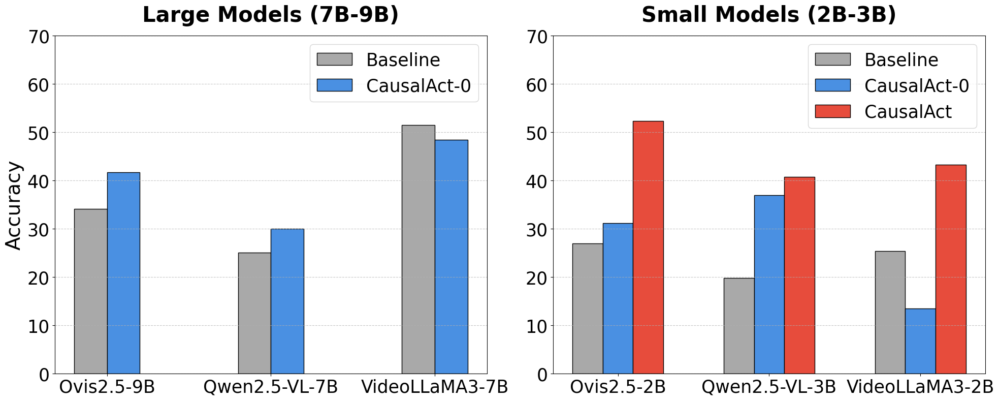

UCF101-AD sampleIn the video, a person is performing an action. Select the caption that most accurately describes it.
The familiar face, tool, and setting invite an “Apply Eye Makeup” prediction, but the defining action never occurs. That gap between plausible context and verified motion is action denial.
UCF101-AD tests denial under progressively different formulations. The Standard MCQ pairs “None” with the tempting target action and unrelated distractors. Explicit Denial spells out that contextual cues can be present while the action is absent. Primary Distractor Removed takes away the most seductive wrong answer, while the Binary setup asks a direct yes-or-no question.
Together, these variants separate action recognition from a model’s tendency to affirm a plausible premise. The bold response is correct; the underlined response is the primary contextual distractor.

Abstract
Multimodal large language models (MLLMs) have rapidly advanced video understanding, achieving strong zero-shot and few-shot recognition across standard benchmarks. Yet their ability to deny an action by recognizing when an activity is not happening despite strong contextual cues remains largely unexplored. We introduce UCF101-AD, a large-scale benchmark consisting of paired Action-Presence and Action-Denial clips, designed to evaluate this capacity for denial. Each negative video in UCF101-AD preserves the same contextual and motion cues (persons, objects, locations) as its positive counterpart, but the defining action itself is explicitly absent.
Evaluating 20 state-of-the-art MLLMs reveals a consistent failure: models that exceed 85% accuracy on the positive action classes collapse below 50% on its action-denial counterpart, indicating a strong inclination to affirm plausible actions rather than verify that they truly occur. This exposes a critical blind spot in modern video understanding: the inability to reason causally about whether a motion actually happens. To probe this issue, we explore a causal graph formulation, CausalAct, which expresses scene structure through natural-language prompts linking context, interaction, and motion. Incorporating such causal cues substantially reduces false positives, demonstrating that denial is a learnable reasoning skill. UCF101-AD provides a new lens for diagnosing and improving causal reasoning in multimodal models.

The recognition–denial gap
Strong on UCF101. Brittle on UCF101-AD.
On the original UCF101 test set, models usually exceed 85% accuracy because the labeled action and its defining motion are present. The green shape is broad and consistent.
On UCF101-AD, the scene still looks right—the people, objects, locations, and nearby motions remain—but the target action is absent. The red shape collapses. Even the strongest model reaches only 51.5% Overall-AD, while most fall between 20% and 35%.
Benchmark results
Zero-shot accuracy (%) on UCF101-AD. Type 1 contains context without defining motion; Type 2 contains similar context with a different plausible motion.
| Model | Action-Denial | Action- Presence ↑ |
Overall ↑ | HM ↑ | ||
|---|---|---|---|---|---|---|
| Type 1 ↑ | Type 2 ↑ | Overall-AD ↑ | ||||
| Ovis2.5-9B | 34.5 | 33.8 | 34.1 | 97.5 | 43.7 | 50.5 |
| Ovis2-8B | 25.6 | 27.1 | 26.4 | 95.6 | 36.9 | 41.4 |
| InternVideo2.5_Chat-8B | 19.1 | 17.7 | 18.4 | 96.6 | 30.3 | 30.9 |
| InternVL2.5-8B | 30.5 | 32.5 | 31.6 | 93.5 | 41.0 | 47.2 |
| Qwen2.5-VL-7B-Instruct | 22.0 | 27.9 | 25.1 | 95.4 | 35.8 | 39.7 |
| VideoLLaMA3-7B | 49.4 | 53.4 | 51.5 | 96.0 | 58.3 | 67.0 |
| VideoChat-Flash-Qwen2-7B | 27.4 | 31.1 | 29.4 | 94.4 | 39.3 | 44.8 |
| Oryx-7B | 20.6 | 23.5 | 22.1 | 85.6 | 31.7 | 35.1 |
| Valley-Eagle-7B | 8.8 | 13.1 | 11.1 | 96.4 | 24.0 | 19.9 |
| LLaVA-Video-7B-Qwen2 | 28.9 | 30.7 | 29.9 | 96.4 | 40.0 | 45.6 |
| Kimi-VL-A3B-Instruct | 27.4 | 31.4 | 29.6 | 94.7 | 39.5 | 45.1 |
| Ovis2.5-2B | 23.1 | 30.4 | 27.0 | 91.1 | 36.7 | 41.7 |
| Qwen2.5-VL-3B-Instruct | 17.2 | 22.1 | 19.8 | 92.3 | 30.8 | 32.6 |
| VideoLLaMA3-2B | 20.2 | 30.0 | 25.4 | 93.6 | 35.8 | 40.0 |
| Qwen2.5-VL-72B-Instruct | 42.6 | 47.8 | 45.7 | 97.6 | 53.6 | 62.3 |
| GPT4o-mini | 20.7 | 22.3 | 21.5 | 90.1 | 31.9 | 34.7 |
| Reasoning Models | ||||||
| Ovis2.5-9B (thinking) | 36.7 | 43.8 | 40.4 | 96.7 | 48.9 | 57.0 |
| Video-R1-7B | 12.7 | 16.3 | 14.6 | 96.0 | 27.0 | 25.3 |
| Kimi-VL-A3B-Thinking | 14.9 | 26.1 | 20.9 | 96.7 | 32.4 | 34.4 |
| ARC-Hunyuan-Video-7B | 12.9 | 16.3 | 14.7 | 58.5 | 21.3 | 23.5 |
| Lumian-VLR-7B-Thinking | 9.8 | 10.7 | 10.3 | 55.3 | 17.1 | 17.4 |
Overall averages all Action-Denial and Action-Presence samples. HM is the harmonic mean of Overall-AD and Action-Presence, rewarding models that balance recognition with denial. Bold and underlined values mark the best and second-best results.
Remove the temptation, and denial gets easier
Accuracy rises from the Standard MCQ to Explicit Denial, then rises again when the primary action distractor disappears.


From correlation to causality
CausalAct checks the chain before naming the action
CausalAct represents a video as a directed acyclic graph. Persons, objects, and location provide context; spatial relations and interactions describe how entities are arranged and engaged; motion captures the dynamic evidence; and only then does the graph reach an action.
The key constraint is simple: context alone should not imply an action. Object-centric actions require both the right interaction and motion; person-centric actions still require the defining motion. If that causal chain breaks, the model should deny the action.
Prompting + auxiliary fine-tuning
Teaching models how to use the graph
CausalAct-0 translates the graph into a structured natural-language prompt: define the components, state their dependencies, show positive and negative examples, then ask the model to infer the evidence internally before choosing a caption.
For smaller models that struggle to follow this structure, CausalAct adds auxiliary fine-tuning on graph questions about topology, node relationships, causal paths, and property consistency. These tasks never reveal the negative action label, preventing label leakage. They teach the reasoning structure—not the benchmark answers.

For larger models, zero-shot CausalAct-0 improves Ovis2.5-9B and Qwen2.5-VL-7B, whose language backbones can use the structured prompt. VideoLLaMA3-7B degrades slightly, showing that prompting alone is not universally sufficient.
For 2B–3B models, auxiliary graph fine-tuning produces the decisive gains: Ovis2.5-2B rises from 27.0% to 52.3%, Qwen2.5-VL-3B from 19.8% to 40.7%, and VideoLLaMA3-2B from 25.4% to 43.3% Overall-AD. The model learns to verify the causal chain before asserting an action.

Citation
BibTeX
@InProceedings{Abdullah_2026_ECCV,
author = {Abdullah, Raiyaan and Azad, Shehreen and Rawat, Yogesh Singh},
title = {Learning to Deny: Action Denial in Multimodal Large Language Models},
booktitle = {Computer Vision -- ECCV 2026},
publisher = {Springer Nature Switzerland},
address = {Cham},
pages = {}
}